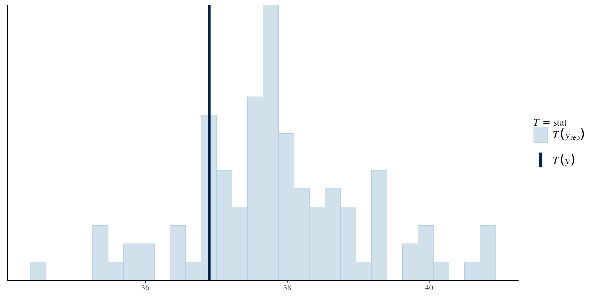

Bayesian inference
2023-06-30
\[ p(\boldsymbol{\theta} \mid \boldsymbol{Y}) = \frac{p(\boldsymbol{Y} \mid \boldsymbol{\theta})p(\boldsymbol{\theta})}{ \int p(\boldsymbol{Y} \mid \boldsymbol{\theta})p(\boldsymbol{\theta})\mathrm{d}\boldsymbol{\theta}}, \qquad(1)\]
In the Bayesian world,
In all scenarios, we will have samples from the posterior distribution for parameters \(\boldsymbol{\theta}\): any summary can be computed from these via Monte Carlo methods.
e.g., we can report the posterior mean or median
credible intervals (probability that parameter falls in) are simply quantiles of functionals
We consider new realizations from posterior predictive \[\begin{align*} p(Y_{\text{new}} \mid \boldsymbol{Y}) = \int_{\Theta} p(Y_{\text{new}} \mid \boldsymbol{\theta}) p(\boldsymbol{\theta} \mid \boldsymbol{Y}) \mathrm{d} \boldsymbol{\theta} \end{align*}\]
Trade optimization for integration problem!
The integral is intractable, so we need to resort to alternative schemes:
For models without covariates, Northrop (2023) offers exact draws from posterior via the ratio-of-uniform algorithm.
One objection to Bayesian inference is arbitrary selection of priors
Popular choices include
Better choices penalize the shape, including
Figure 1: Marginal posterior of GEV shape parameter for different prior distributions.
The revdbayes (Northrop, 2023) provides the state-of-the-art for stationary models (faster than MCMC, exact sampling).
For each combination of posterior draw, compute the functional of interest (e.g., the median of the 50-year maximum) and/or quantiles.
Here, using max-stability to get a new observation (maximum of 50 yearly max) for each draw \(\boldsymbol{\theta}\).
Figure 2: Density of posterior predictive (black) and posterior median (grey) of 50 year maximum.
Can model capture summaries of data?
See bayesplot and loo packages for more information and options about the Bayesian workflow (Gabry et al., 2019).
Family: GEV
Posterior summary:
Posterior mean SD
mu: (Intercept) 36.30933484 0.7041629
mu: syear -0.66354673 0.7182214
phi: (Intercept) 1.44282072 0.1293479
xi: (Intercept) -0.04462734 0.1352223With multiple chains, it is easier to use output of coda package.
For summaries to be reliable (e.g., quantiles of posterior), the approximate number of independent samples from the total simulated should be large enough.
chains <- coda::as.mcmc.list(
lapply(post_reg$chains, coda::as.mcmc))
# effective sample size is sufficient here
coda::effectiveSize(chains) var1 var2 var3 var4
2763.133 3121.967 3024.125 3093.349 Can compare algorithms efficiency via effective sample size per second.
Should look like fat hairy catterpilars.
While some MCMC algorithms are more costly, they yield samples that are less autocorrelated (so contain more information altogether).
We can get directly summaries (e.g., posterior sample mean)
Due to autocorrelation, dedicated methods are employed to get standard errors.
V1 V2 V3 V4
Min. :33.91 Min. :-3.1841 Min. :1.064 Min. :-0.46361
1st Qu.:35.81 1st Qu.:-1.1247 1st Qu.:1.352 1st Qu.:-0.13404
Median :36.30 Median :-0.6561 Median :1.436 Median :-0.05592
Mean :36.31 Mean :-0.6523 Mean :1.441 Mean :-0.04522
3rd Qu.:36.78 3rd Qu.:-0.1614 3rd Qu.:1.525 3rd Qu.: 0.04187
Max. :38.73 Max. : 1.7285 Max. :1.910 Max. : 0.41994 Custom loss function for the return levels \(q\) from EVA data challenge \[\begin{align*} L(q, \widehat{q}(\theta)) = \begin{cases} 0.9(0.99q - \widehat{q}), & 0.99q > \widehat{q} \\ 0, & |q - \widehat{q}| \leq 0.01 q\\ 0.1(\widehat{q} - 1.01q), & 1.01q < \widehat{q}. \end{cases} \end{align*}\]
For given value of the return level \(q_0\): \[\begin{align*} r(q_0) = \int_{\boldsymbol{\Theta}}L(q(\boldsymbol{\theta}), q_0) p (\boldsymbol{\theta}) \mathrm{d} \boldsymbol{\theta} \end{align*}\] and we seek to minimize the risk, \(\mathrm{min}_{q_0 \in \mathbb{R}_{+}} r(q_0)\)
Figure 3: Loss function for wind speed data, based on fitting a generalized extreme value distribution to annual maxima.
revdbayes: Ratio-of-uniforms sampling for Bayesian extreme value analysis.